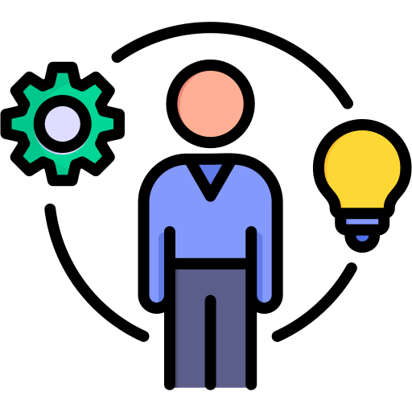
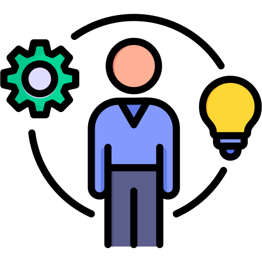

Olá, me chamo Daniel Kenji!
Sou Desenvolvedor Frontend com habilidades na construção de sites eficientes e adaptáveis. Aos 19 anos, estudo na Universidade Paulista, onde aperfeiçoo minhas competências em desenvolvimento web. Meu objetivo é desenvolver projetos bem organizados, com código limpo e interfaces intuitivas, combinando expertise técnica e aprendizado contínuo.


 
